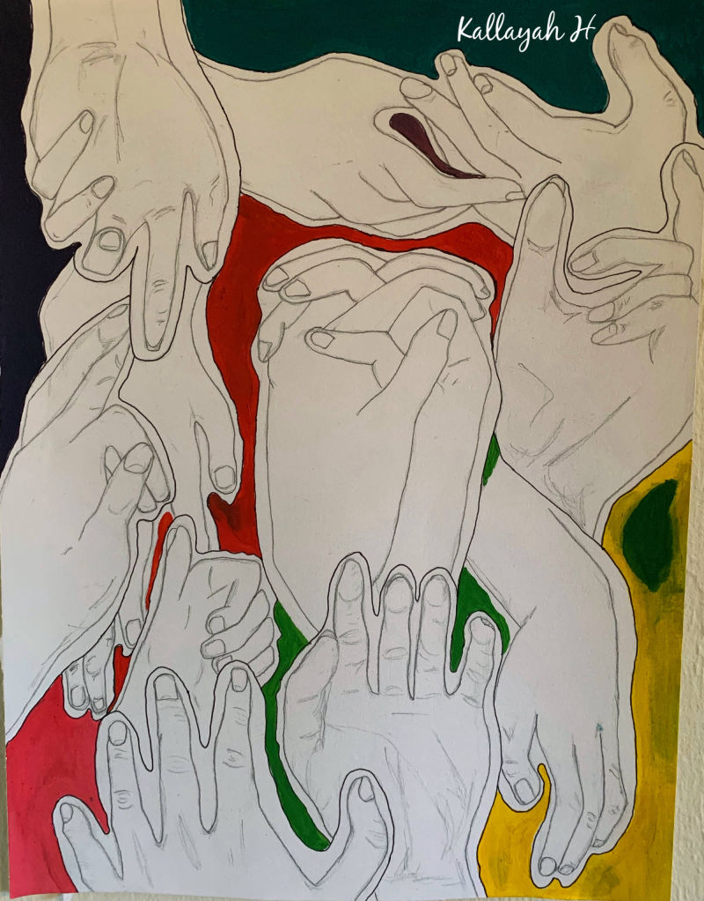
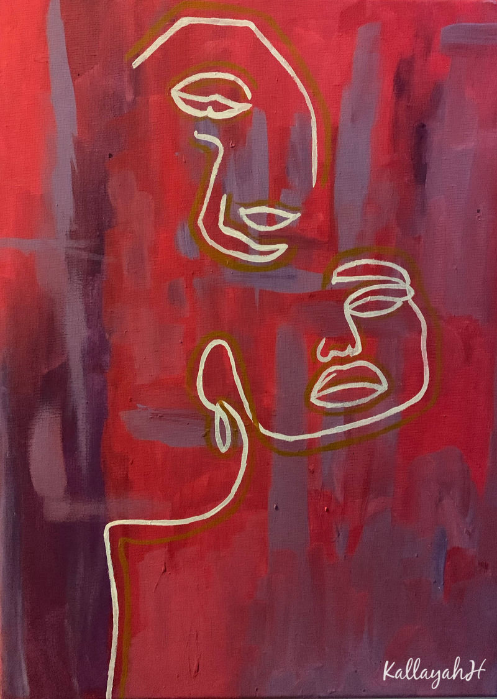
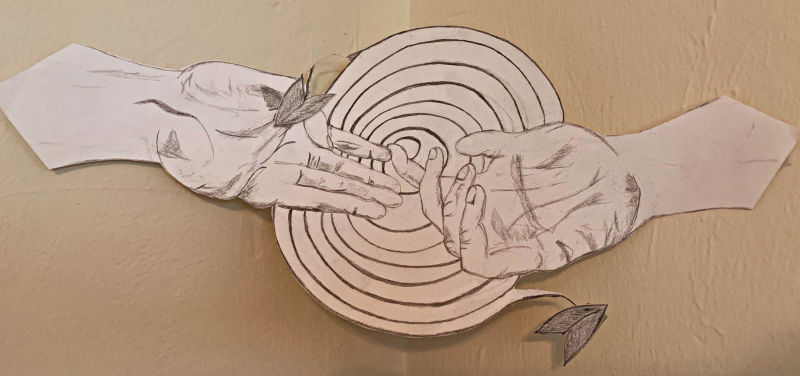

Here is a prototype I made using proto.io software. This prototype was used in user interviews to imitate what the actual app would function like. Below you will find the results from the study this prototype was used in.
Research Interest
After graduating this upcoming May, I will be in pursuit of my PhD in Computer/Information Science. My research focus will be in the areas of educational technology, interface design and user experience design. My ultimate goal with my research is to help students in grades K-12 be more creative in their learning environment through the use of educational technology tools. I am passionate about learning, diversity within learning environments and implimenting creativity into classroom structures using the power that technology provides.